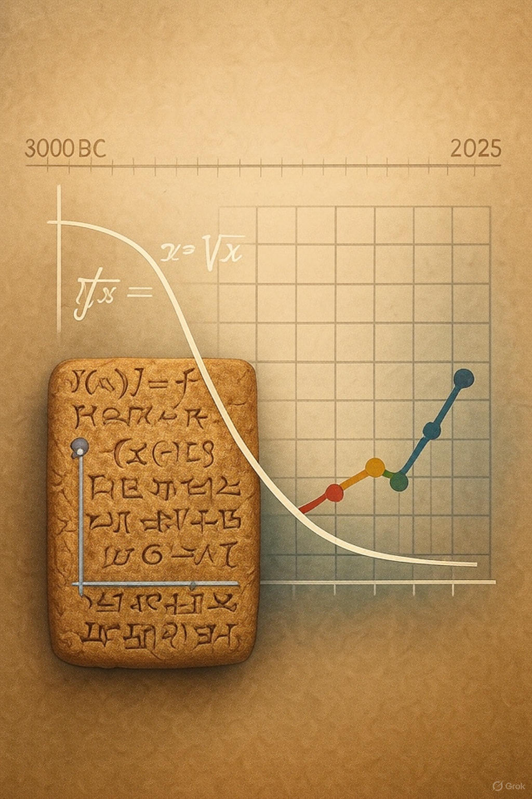

보험계리학은 인류가 불확실한 미래를 대비하기 위해 발전시킨 학문입니다. 위험을 수학적으로 평가하고 관리하는 이 분야는 보험 산업의 핵심이며, 고대로부터 현대에 이르기까지 지속적인 진화를 거쳐왔습니다.
이 책은 보험계리학의 태동기부터 현재의 기술 혁신까지를 체계적으로 탐구합니다. 고대 바빌로니아의 법적 제도에서 시작하여 그리스·로마의 실천적 접근, 중세의 상호부조 시스템, 17세기 확률론의 탄생, 18~19세기의 전문화, 20세기의 디지털화, 그리고 21세기 AI 통합까지, 각 시대의 주요 사건과 제도를 분석합니다.
이 과정에서 보험계리학이 단순한 계산 도구를 넘어 사회·경제적 안정성을 제공하는 역할을 강조합니다.
독자들은 이 책을 통해 보험계리학의 역사적 맥락을 이해하고, 현대 응용에 대한 통찰을 얻을 수 있을 것입니다.
전체 내용은 10개 챕터로 구성되어 있으며, 각 챕터는 역사적 배경, 제도 세부 설명, 그리고 테이블 요약을 포함합니다. 이제 고대 태동기로부터 여정을 시작하겠습니다.
그림 0.1: 고대부터 현대까지 계리학의 시간 다리